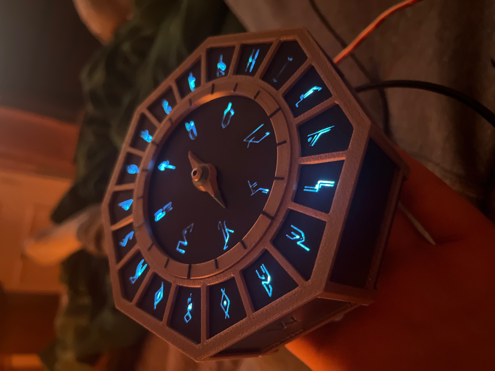
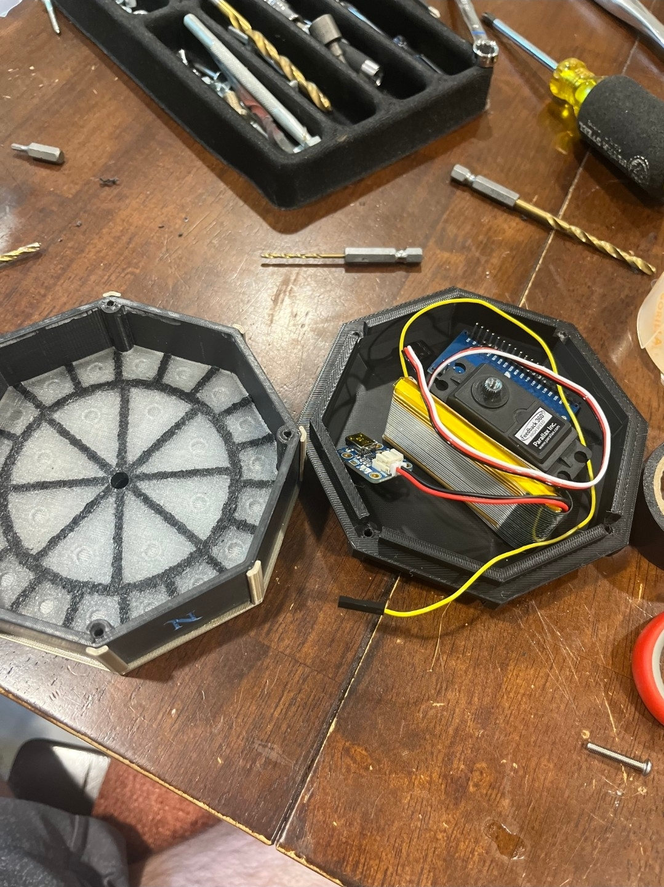
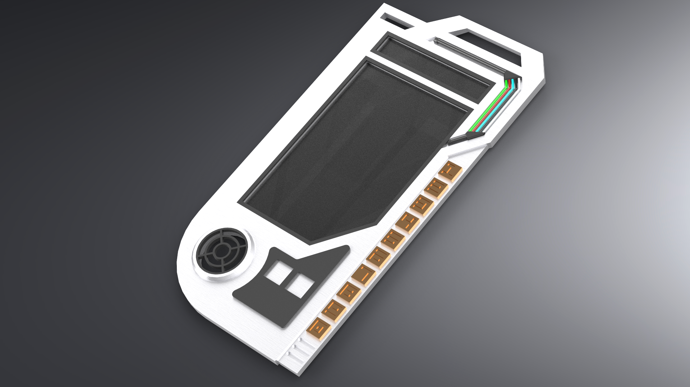

Featured Project
Campaign Companion
Founder & Lead Developer | Directed 10 developers across 3 Agile teams (currently onboarding a university capstone squad) | Founded Hearthlight Studios LLC for 100% IP ownership.
C#
Unity
Agile / SCRUM
Image Processing
Custom Node Editor
Desktop Architecture
- Custom C# Tooling: Built an interactive map-to-note node graph system, an image-processing biome brush pipeline, and an Obsidian-compatible rich text markdown parser.
- Portable File Architecture: Designed a human-readable, portable directory structure enabling users to seamlessly share and sync campaigns via standard asynchronous cloud drives (e.g., OneDrive) without centralized servers.
- Academic Recognition: Earned top course scores and selected by faculty as the model documentation showcase for future software engineering classes.
- Community & Growth: Scaled an active 78+ member Discord beta testing community driven by regular video devlogs and alpha releases.

Other Projects
2D Fantasy Platformer
C++
UNT LARC Engine
Role: Designed and implemented the level pipeline, from authoring tools to runtime rendering and physics integration.
- • Engine-level rendering and pipeline modifications
- • Custom 3D sprite batching and depth sorting
- • LDtk-driven levels with Box2D physics integration
- • Multi-character platformer gameplay systems


Wireless DM-Controlled Compass
ESP32
C++
Web Server
Servo Control
Role: Sole software developer responsible for device firmware and networking functionality.
- • Built a wireless prop device for tabletop RPG gameplay
- • Embedded web server allows DM to send real-time direction updates
- • ESP32-controlled servo physically rotates compass needle
- • Integrated LEDs and custom enclosure for immersive feedback


Wireless DM-Controlled Datapad
Raspberry Pi
Python
Custom GUI
Role: Sole software developer responsible for all systems and networking functionality.
- • Designed and implemented a custom touchscreen GUI inspired by Star Wars interfaces
- • Built a local web server allowing a game master to send, view, and delete messages remotely
- • Implemented message storage and file management on-device
- • Developed as a live-use prop for a tabletop RPG campaign
2D Metroidvania Spellslinger (WIP)
GameMaker
GML
Role: Solo Developer responsible for all gameplay, systems, and artwork.
- • Metroidvania with rune-based spell casting
- • Directional input system inspired by Helldivers
- • Souls-inspired shield and resource mechanics
- • Custom UI, lighting, and animations